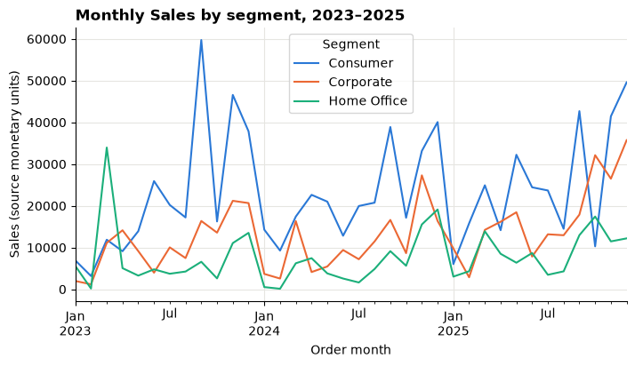
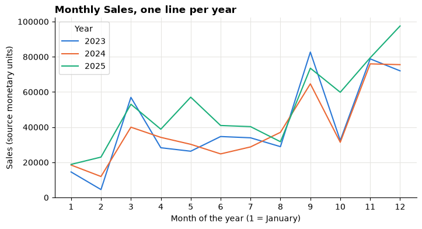
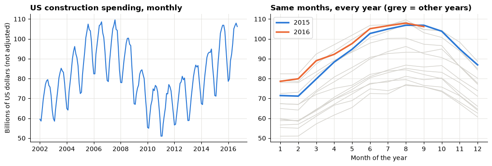
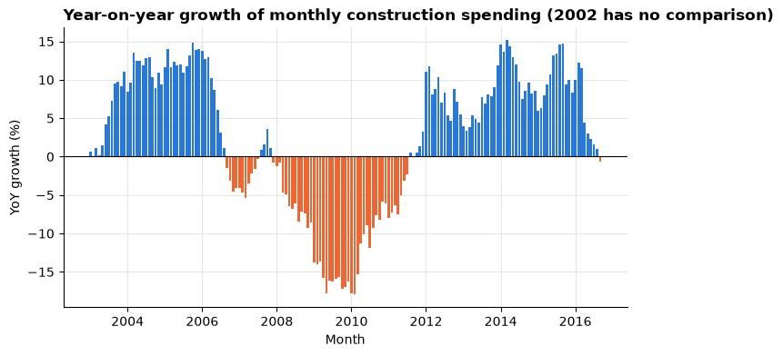
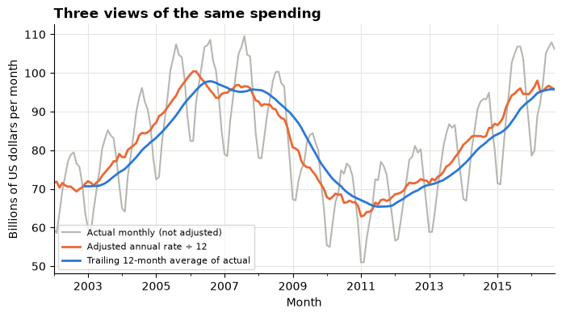

Session 7 lab: Trends, returns and a decision dashboard¶
Add time to your segment comparison, read growth figures without being fooled by the seasons, use the returns list carefully, apply the same ideas to official construction spending, and bring it together in one dashboard with a recommendation.

Open this notebook in Google Colab with the button above, then run each cell from top to bottom with Shift + Enter. Save your own copy with File → Save a copy in Drive.
The business decision¶
The commercial lead asks:
"Before we test any change, show me how sales have moved over time, whether returns differ between segments, and which one test you would run first."
A single snapshot cannot answer this. A month can look like a crash or a boom simply because of the time of year.
About the data
Superstore is a sample published by Tableau about a fictitious company. Sales are in the file's own source monetary units; the currency is not stated. A pattern over time shows when something happened, not why.
US construction spending comes from the U.S. Census Bureau's monthly Construction Spending survey (value of construction put in place), as mirrored in Tableau's sample-data catalog. Values are in millions of US dollars of each month, not adjusted for inflation.
How this lab works¶
| Part | What you do | Tasks |
|---|---|---|
| Guided practice | Follow along step by step, everyone together | G1–G6 |
| Independent tasks | Same skills, new questions, on your own or in pairs | I1–I7 |
| Challenge | Harder reasoning and debugging | C1–C2 |
Each task has a level:
- Core: everyone completes it; it is enough for your portfolio.
- Stretch: for when you finish the core tasks early.
- Challenge: optional, harder reasoning.
What you will be able to do¶
- Build a complete monthly series and recognise seasonal patterns.
- Calculate month-on-month and year-on-year growth, and explain when each is fair.
- Explain why a blank growth value means "no comparison", and why filtering too early creates blanks.
- Measure the share of orders on the returns list, and state what it cannot tell you.
- Select one consistent series from an official statistics file and compare part-years fairly.
- Combine three charts into one dashboard and write a recommendation for a test.
Evidence you keep: your dashboard, your growth and returns definitions, your construction-spending chart with its series definition, and a five-sentence recommendation. Together they are your retail portfolio checkpoint.
Before you start¶
- Read the Session 7 lecture.
- Have your segment KPI table from the Session 5 lab to hand.
- Re-read cherry-picked time windows and storytelling with data.
Guided practice¶
G1 (Core): The monthly trend¶
Run the setup cell, then load the table.
# Course data setup. Run this cell first; you do not need to understand it yet.
# It downloads the Superstore sample from Tableau's website, checks it is the
# exact version this course was written for, and prepares the order-lines table.
import hashlib
import os
import urllib.request
import matplotlib.pyplot as plt
import pandas as pd
SOURCE_URL = "https://public.tableau.com/app/sample-data/sample_-_superstore.xls"
EXPECTED_SHA256 = "5045ed4fec49cae2cc0dfc5ab0d204ba09efa767fe00c996822499e8cc42fbbd"
SOURCE_FILE = os.environ.get("COURSE_XLS_PATH", "sample_-_superstore.xls")
try:
import xlrd # noqa: F401 (needed to read .xls files)
except ImportError:
import subprocess
import sys
subprocess.check_call([sys.executable, "-m", "pip", "install", "-q", "xlrd"])
if not os.path.exists(SOURCE_FILE):
urllib.request.urlretrieve(SOURCE_URL, SOURCE_FILE)
with open(SOURCE_FILE, "rb") as f:
digest = hashlib.sha256(f.read()).hexdigest()
if digest != EXPECTED_SHA256:
print("WARNING: Tableau has changed this sample file since the course was written.")
print("Your numbers will differ from the lesson. Ask your facilitator for the course copy.")
def load_orders():
"""Return one row per order line, orders placed 2023-01-01 to 2025-12-31."""
raw = pd.read_excel(SOURCE_FILE, sheet_name="Orders")
returns = pd.read_excel(SOURCE_FILE, sheet_name="Returns")
# Orders with more than one Customer ID (a known data issue), found before filtering.
ids_per_order = raw.groupby("Order ID")["Customer ID"].nunique()
conflict_orders = set(ids_per_order[ids_per_order > 1].index)
in_scope = (raw["Order Date"] >= "2023-01-01") & (raw["Order Date"] < "2026-01-01")
df = raw.loc[in_scope].copy()
df = df.rename(columns={
"Row ID": "row_id", "Order ID": "order_id", "Order Date": "order_date",
"Ship Date": "ship_date", "Ship Mode": "ship_mode", "Customer ID": "customer_id",
"Segment": "segment", "Country/Region": "country_region", "Region": "region",
"Category": "category", "Sub-Category": "sub_category", "Product ID": "product_id",
"Product Name": "product_name", "Sales": "sales", "Quantity": "quantity",
"Discount": "discount", "Profit": "profit",
})
df["returned_order_flag"] = df["order_id"].isin(set(returns["Order ID"])).astype(int)
df["customer_order_conflict"] = df["order_id"].isin(conflict_orders).astype(int)
df["customer_analysis_eligible"] = 1 - df["customer_order_conflict"]
df["order_to_ship_days"] = (df["ship_date"] - df["order_date"]).dt.days
df["order_month"] = df["order_date"].dt.to_period("M").dt.to_timestamp()
columns = [
"row_id", "order_id", "order_date", "ship_date", "ship_mode", "customer_id",
"segment", "country_region", "region", "category", "sub_category", "product_id",
"product_name", "sales", "quantity", "discount", "profit", "returned_order_flag",
"customer_analysis_eligible", "customer_order_conflict", "order_to_ship_days",
"order_month",
]
return df[columns].sort_values("row_id").reset_index(drop=True)
pd.set_option("display.float_format", "{:,.2f}".format)
plt.rcParams.update({
"figure.figsize": (8, 4),
"axes.spines.top": False,
"axes.spines.right": False,
"axes.grid": True,
"axes.axisbelow": True,
"grid.color": "#e6e5e1",
"axes.prop_cycle": plt.cycler(color=["#2a78d6", "#eb6834", "#1baf7a"]),
"axes.titleweight": "bold",
"axes.titlelocation": "left",
})
print("Setup complete.")
Setup complete.
df = load_orders()
print("Rows (order lines):", len(df))
print("Different orders: ", df["order_id"].nunique())
Rows (order lines): 6815
Different orders: 3388
Every row has an order_month column: the first day of the month the order was placed. Grouping by it gives one Sales total per calendar month.
monthly = df.groupby("order_month")["sales"].sum()
monthly.head(6)
order_month
2023-01-01 14,518.06
2023-02-01 4,519.89
2023-03-01 56,933.91
2023-04-01 28,295.35
2023-05-01 26,319.77
2023-06-01 34,669.48
Name: sales, dtype: float64
Check that no month is missing¶
Growth calculations compare a month with an earlier month. If a month were missing, the "previous" row would silently be the wrong month. So before anything else, build the full list of calendar months and compare.
pd.date_range(..., freq="MS") makes one date per Month Start.
all_months = pd.date_range("2023-01-01", "2025-12-01", freq="MS")
missing = all_months.difference(monthly.index)
print("Months expected:", len(all_months))
print("Months with Sales:", len(monthly))
print("Missing months:", len(missing))
Months expected: 36
Months with Sales: 36
Missing months: 0
Read the output above. If "Missing months" is 0, every calendar month is present and the series is complete. We still line the series up against all_months with reindex, so a gap would show as a blank rather than being skipped.
monthly = monthly.reindex(all_months)
monthly.plot(title="Monthly Sales, orders placed 2023–2025")
plt.xlabel("Order month")
plt.ylabel("Sales (source monetary units)")
plt.show()

G2 (Core): Segments and seasons¶
unstack() turns the segment level into columns, so each segment becomes its own line.
monthly_by_segment = df.groupby(["order_month", "segment"])["sales"].sum().unstack()
monthly_by_segment.plot(title="Monthly Sales by segment, 2023–2025")
plt.xlabel("Order month")
plt.ylabel("Sales (source monetary units)")
plt.legend(title="Segment")
plt.show()

Now put the three years on top of each other: one line per year, with the month of the year along the bottom.
by_year = pd.DataFrame({
"year": monthly.index.year,
"month": monthly.index.month,
"sales": monthly.values,
})
seasons = by_year.pivot(index="month", columns="year", values="sales")
seasons.plot(title="Monthly Sales, one line per year")
plt.xlabel("Month of the year (1 = January)")
plt.ylabel("Sales (source monetary units)")
plt.xticks(range(1, 13))
plt.legend(title="Year")
plt.show()

A quick text check: the three highest and two lowest months in each year.
for year, sales in monthly.groupby(monthly.index.year):
highest = ", ".join(sales.nlargest(3).index.strftime("%b"))
lowest = ", ".join(sales.nsmallest(2).index.strftime("%b"))
print(year, "| highest:", highest, "| lowest:", lowest)
2023 | highest: Sep, Nov, Dec | lowest: Feb, Jan
2024 | highest: Nov, Dec, Sep | lowest: Feb, Jan
2025 | highest: Dec, Nov, Sep | lowest: Jan, Feb
What do you notice?
Write down three observations from the charts and the output above. Are the same months high every year? Are the same months low? Does the pattern look similar in every segment?
G3 (Core): Two kinds of growth¶
| Growth type | Compares each month with | pandas |
|---|---|---|
| Month-on-month (MoM) | the previous calendar month | pct_change() |
| Year-on-year (YoY) | the same month one year earlier | pct_change(periods=12) |
Both use the same formula: (this month − comparison month) ÷ comparison month.
Only on a complete monthly series
pct_changecompares each row with the row above it (or 12 rows above). That only means "previous month" or "same month last year" because we checked that all 36 months are present and in order.
To see what is being compared, the table below also keeps the comparison values. shift(1) moves each value down one row; shift(12) moves it down twelve rows.
growth = pd.DataFrame({"sales": monthly})
growth["previous_month"] = growth["sales"].shift(1)
growth["mom_growth"] = growth["sales"].pct_change()
growth["same_month_last_year"] = growth["sales"].shift(12)
growth["yoy_growth"] = growth["sales"].pct_change(periods=12)
# A comparison month with zero Sales gives no fair growth figure: treat it as blank.
growth["mom_growth"] = growth["mom_growth"].where(growth["previous_month"] != 0)
growth["yoy_growth"] = growth["yoy_growth"].where(growth["same_month_last_year"] != 0)
The full table has 36 rows. To keep it readable we show a few months and format growth as percentages. as_pct writes a blank growth value as the words "no comparison".
def as_pct(value):
if pd.isna(value):
return "no comparison"
return f"{value:+.1%}"
def growth_table(table, months):
rows = table.loc[months]
return pd.DataFrame({
"Sales": rows["sales"].map("{:,.0f}".format),
"MoM growth": rows["mom_growth"].map(as_pct),
"YoY growth": rows["yoy_growth"].map(as_pct),
}, index=rows.index.strftime("%b %Y"))
growth_table(growth, ["2023-01-01", "2023-02-01", "2023-03-01",
"2024-01-01", "2025-01-01", "2025-12-01"])
| Sales | MoM growth | YoY growth | |
|---|---|---|---|
| Jan 2023 | 14,518 | no comparison | no comparison |
| Feb 2023 | 4,520 | -68.9% | no comparison |
| Mar 2023 | 56,934 | +1159.6% | no comparison |
| Jan 2024 | 18,462 | -74.4% | +27.2% |
| Jan 2025 | 18,830 | -75.1% | +2.0% |
| Dec 2025 | 97,502 | +22.8% | +29.1% |
Read the output above row by row:
- January 2023 is the first month in the file, so it has no previous month and no month a year earlier.
- Every 2023 month has no year-earlier month in the file, so its YoY growth is blank.
- Look at March 2023. A very large MoM figure often just means the previous month was small, not that something remarkable happened.
- Compare January 2025 MoM with January 2025 YoY. Do they tell the same story?
Where are the blanks?¶
isna() marks blanks as True; summing counts them. Here we count blanks in each year.
growth[["mom_growth", "yoy_growth"]].isna().groupby(growth.index.year).sum()
| mom_growth | yoy_growth | |
|---|---|---|
| 2023 | 1 | 12 |
| 2024 | 0 | 0 |
| 2025 | 0 | 0 |
Blank is not zero
A blank (
NaN) means "no comparison available". It is not 0% growth, and you must never fill it with 0. A table or chart that shows 0% for January 2023 is wrong.
See the difference on a chart¶
fig, (ax_mom, ax_yoy) = plt.subplots(2, 1, figsize=(9, 6), sharex=True)
ax_mom.bar(growth.index, growth["mom_growth"] * 100, width=20)
ax_mom.set_title("Month-on-month growth swings with the seasons")
ax_mom.set_ylabel("MoM growth (%)")
ax_yoy.bar(growth.index, growth["yoy_growth"] * 100, width=20, color="#eb6834")
ax_yoy.set_title("Year-on-year growth compares like with like (2023 has no comparison)")
ax_yoy.set_ylabel("YoY growth (%)")
ax_yoy.set_xlabel("Order month")
fig.tight_layout()
plt.show()

Which one is fair?¶
| Growth type | Good for | Can mislead when |
|---|---|---|
| Month-on-month | Spotting sudden changes | The business is seasonal: January after a busy December always looks like a crash |
| Year-on-year | Comparing like with like across seasons | A one-off event happened in the same month last year |
G4 (Core): Filtering can remove the comparison¶
Suppose you only care about 2025. There are two orders of work:
- Filter, then compute: keep only 2025 rows, then calculate growth.
- Compute, then filter: calculate growth on all 36 months, then show only 2025.
Run both and compare January and February 2025.
# 1. Filter first, then compute growth
only_2025 = df[df["order_date"].dt.year == 2025]
monthly_2025 = only_2025.groupby("order_month")["sales"].sum()
filter_first = pd.DataFrame({
"mom_growth": monthly_2025.pct_change(),
"yoy_growth": monthly_2025.pct_change(periods=12),
})
# 2. Compute growth on all months first, then keep 2025
compute_first = growth.loc["2025", ["mom_growth", "yoy_growth"]]
check_months = ["2025-01-01", "2025-02-01"]
pd.DataFrame({
"MoM, filter first": filter_first.loc[check_months, "mom_growth"].map(as_pct),
"MoM, compute first": compute_first.loc[check_months, "mom_growth"].map(as_pct),
"YoY, filter first": filter_first.loc[check_months, "yoy_growth"].map(as_pct),
"YoY, compute first": compute_first.loc[check_months, "yoy_growth"].map(as_pct),
}, index=pd.DatetimeIndex(check_months).strftime("%b %Y"))
| MoM, filter first | MoM, compute first | YoY, filter first | YoY, compute first | |
|---|---|---|---|---|
| Jan 2025 | no comparison | -75.1% | no comparison | +2.0% |
| Feb 2025 | +22.0% | +22.0% | no comparison | +92.3% |
In the output above, filtering first leaves January 2025 with no row above it, so its MoM growth becomes blank. And because the filtered series holds only 12 months, every YoY value becomes blank: December 2024 and all of 2024 were removed before the calculation could see them.
Rule
Compute growth on the complete monthly series first. Filter or highlight the period you want to show afterwards. If you must filter first, say clearly that the comparison months were removed.
Filtering by segment or region is different: it changes which lines count, and it applies equally to both months being compared. That is fine, as long as you build the full 36-month series for that group and state the filter.
G5 (Core): The returns list¶
From the Session 2 lab, returned_order_flag is 1 when an order appears on the source's returns list. It is an order-level flag: every line of a listed order has 1. So we count distinct orders, never lines.
returned = df[df["returned_order_flag"] == 1]
returns_by_segment = pd.DataFrame({
"orders": df.groupby("segment")["order_id"].nunique(),
"orders_on_returns_list": returned.groupby("segment")["order_id"].nunique(),
})
returns_by_segment.loc["All segments"] = [
df["order_id"].nunique(),
returned["order_id"].nunique(),
]
returns_by_segment["share_on_list"] = (
returns_by_segment["orders_on_returns_list"] / returns_by_segment["orders"]
).map("{:.1%}".format)
returns_by_segment
| orders | orders_on_returns_list | share_on_list | |
|---|---|---|---|
| segment | |||
| Consumer | 1738 | 99 | 5.7% |
| Corporate | 1044 | 61 | 5.8% |
| Home Office | 606 | 31 | 5.1% |
| All segments | 3388 | 191 | 5.6% |
The All segments row is calculated from the whole table, not by adding the segment rows. Check that the segment counts add up to it: if an order appeared in two segments it would be counted twice.
What the returns list cannot tell you
- When an order was returned, or how many items.
- How much money was refunded.
- Whether an order not on the list was definitely kept.
So call it "share of orders on the returns list", not "return rate", and do not subtract anything from Sales because of it.
G6 (Core): Build the dashboard¶
In Python, a simple dashboard is one figure with several charts (called subplots). plt.subplots(3, 1) creates three charts stacked vertically; each one has its own ax to draw on.
The code is wrapped in a function, draw_dashboard, so you can redraw the whole dashboard for one region later by changing a single line. That is the Python version of one filter that controls every view.
The function:
- builds a segment KPI table (Sales and share of orders on the returns list);
- builds a complete 36-month Sales series, putting 0 in any month where the selection has no lines;
- computes YoY growth on the full series before anything is hidden;
- draws three panels with message titles and a scope note.
def draw_dashboard(data, scope):
# 1. Segment KPIs
kpis = pd.DataFrame({
"sales": data.groupby("segment")["sales"].sum(),
"orders": data.groupby("segment")["order_id"].nunique(),
"listed": data[data["returned_order_flag"] == 1].groupby("segment")["order_id"].nunique(),
}).fillna(0).astype({"listed": int}).sort_values("sales")
kpis["share_on_list"] = kpis["listed"] / kpis["orders"]
# 2. Complete monthly series (0 where the selection has no lines)
trend = data.groupby("order_month")["sales"].sum().reindex(all_months, fill_value=0)
# 3. YoY growth on the full series; zero comparison month means no comparison
yoy = trend.pct_change(periods=12).where(trend.shift(12) != 0)
fig, (ax1, ax2, ax3) = plt.subplots(3, 1, figsize=(9, 11))
ax1.barh(kpis.index, kpis["sales"])
for i, share in enumerate(kpis["share_on_list"]):
ax1.text(kpis["sales"].iloc[i], i, f" {share:.1%} of orders on returns list", va="center")
ax1.set_title(f"{kpis.index[-1]} has the most Sales; returns-list shares are close")
ax1.set_xlabel("Sales (source monetary units)")
ax2.plot(trend.index, trend.values)
ax2.set_title("Sales peak towards the end of each year and dip every January–February")
ax2.set_xlabel("Order month")
ax2.set_ylabel("Sales (source monetary units)")
ax3.bar(yoy.index, yoy * 100, width=20, color="#1baf7a")
ax3.axhline(0, color="black", linewidth=0.8)
ax3.set_title("Compared with the same month a year earlier (2023 has no comparison)")
ax3.set_xlabel("Order month")
ax3.set_ylabel("YoY growth (%)")
fig.suptitle(f"Retail dashboard: {scope}", fontweight="bold", x=0.02, ha="left")
fig.text(0.02, 0.005, "Scope: orders placed Jan 2023–Dec 2025. Sales in source monetary units. "
"Fictitious sample data. Returns list = membership only, no refund amounts.",
fontsize=8, color="#555555")
fig.tight_layout(rect=[0, 0.02, 1, 1])
plt.show()
kpis["share_on_list"] = (kpis["share_on_list"] * 100).round(1)
return kpis.rename(columns={"share_on_list": "share_on_list_%"})
draw_dashboard(df, "all regions")

| sales | orders | listed | share_on_list_% | |
|---|---|---|---|---|
| segment | ||||
| Home Office | 277,656.95 | 606 | 31 | 5.10 |
| Corporate | 467,562.02 | 1044 | 61 | 5.80 |
| Consumer | 835,747.86 | 1738 | 99 | 5.70 |
The table under the chart is the segment KPI table the function returned. The message titles were written after reading these charts on the full data; if you redraw for one region, check that each title is still true and change it if not.
Design checks¶
Use what you learned in Designing clear visuals:
- The most important view is at the top.
- Every chart has a title that states a message and labelled axes with units.
- Colour is used only where it means something.
- Nothing can be understood only by colour; labels or a table are available too.
- The scope note states the period, units and that the data is a fictitious sample.
Independent tasks¶
I1 (Core): Redraw the dashboard for one region¶
Your turn: change the code in the next cell and run it again.
# 1. Change "West" to another region: "East", "Central" or "South".
# 2. Run the cell. Read every title: is each message still true for this region?
# 3. If a title is no longer true, write down what it should say instead.
region = "West"
draw_dashboard(df[df["region"] == region], f"{region} region only")

| sales | orders | listed | share_on_list_% | |
|---|---|---|---|---|
| segment | ||||
| Home Office | 84,769.73 | 203 | 18 | 8.90 |
| Corporate | 140,280.49 | 324 | 38 | 11.70 |
| Consumer | 256,522.36 | 562 | 62 | 11.00 |
I2 (Core): Official construction spending — choose one series¶
Official statistics files often hold many series in one table: totals and parts, adjusted and unadjusted, amounts and percentages. Adding everything up would mix incompatible measures. Your first job is to select exactly one series and say precisely what it is.
Run the cell to download the file and check it is the version this course was written for.
# U.S. Census Bureau, Construction Spending (value put in place), as mirrored in
# Tableau's sample-data catalog. The file is read straight into memory; nothing is saved to disk.
import hashlib
import io
import urllib.request
CONS_URL = ("https://public.tableau.com/app/sample-data/"
"enigma-us.gov_.census.eits_.vip-97d8678900cbb89fee543a41aa21ab9a_2_0.csv")
CONS_SHA256 = "6cf9ad9f20c8eeb2c5b33d9cc29b8c648579a52ff50a24d3f6f5f1ba332b8b34"
cons_bytes = urllib.request.urlopen(CONS_URL).read()
if hashlib.sha256(cons_bytes).hexdigest() != CONS_SHA256:
print("WARNING: this file has changed since the course was written. Tell your facilitator.")
cons_raw = pd.read_csv(io.BytesIO(cons_bytes))
print("Rows, columns:", cons_raw.shape)
cons_raw.head(3)
Rows, columns: (50208, 20)
| per_idx | per_name | cat_idx | cat_code | cat_desc | cat_indent | dt_idx | dt_code | dt_desc | dt_unit | et_idx | et_code | et_desc | et_unit | geo_idx | geo_code | geo_desc | is_adj | val | serialid | |
|---|---|---|---|---|---|---|---|---|---|---|---|---|---|---|---|---|---|---|---|---|
| 0 | 1 | 2002-01-01 | 1 | XXXX | Total Construction | 0 | 1 | T | Total Construction | MLN$ | 0 | NaN | NaN | NaN | 1 | US | U.S. Total | 0 | 59,516.00 | 1 |
| 1 | 1 | 2002-01-01 | 2 | 00XX | Residential | 0 | 1 | T | Total Construction | MLN$ | 0 | NaN | NaN | NaN | 1 | US | U.S. Total | 0 | 25,972.00 | 2 |
| 2 | 1 | 2002-01-01 | 3 | NRXX | Nonresidential | 0 | 1 | T | Total Construction | MLN$ | 0 | NaN | NaN | NaN | 1 | US | U.S. Total | 0 | 33,545.00 | 3 |
Each row is one value of one series in one month. The columns that pick out a series are:
| Column | Meaning | Value we want |
|---|---|---|
cat_code |
Category of construction | XXXX = Total construction |
dt_code |
Data type | T = Total (private + public) |
et_idx |
Estimate or its error measure | 0 = the estimate itself |
geo_code |
Geography | US |
is_adj |
Seasonally adjusted? | 0 = not adjusted (actual monthly amounts) |
First look at how many different categories and units the file mixes:
print("Category codes:", cons_raw["cat_code"].nunique())
print("Units:", cons_raw["dt_unit"].unique())
print("Rows with no value:", cons_raw["val"].isna().sum(), "of", len(cons_raw))
cons_raw[cons_raw["cat_code"].isin(["XXXX", "AXXXX"])].groupby(
["cat_code", "cat_desc", "is_adj", "dt_unit"])["val"].count()
Category codes: 38
Units: ['MLN$' 'PCT' nan]
Rows with no value: 33216 of 50208
cat_code cat_desc is_adj dt_unit
AXXXX Annual Rate for Total Construction 1 MLN$ 531
XXXX Total Construction 0 MLN$ 531
1 PCT 0
Name: val, dtype: int64
Now apply all five conditions, and check the result before using it: one row per month, one unit, no blanks, no gaps in the calendar.
selected = cons_raw[
(cons_raw["cat_code"] == "XXXX")
& (cons_raw["dt_code"] == "T")
& (cons_raw["et_idx"] == 0)
& (cons_raw["geo_code"] == "US")
& (cons_raw["is_adj"] == 0)
].copy()
selected["month"] = pd.to_datetime(selected["per_name"])
print("Rows:", len(selected), "| distinct months:", selected["month"].nunique())
print("Units:", selected["dt_unit"].unique(), "| blank values:", selected["val"].isna().sum())
spend = selected.set_index("month")["val"].sort_index()
calendar = pd.date_range(spend.index.min(), spend.index.max(), freq="MS")
print("First month:", spend.index.min().date(), "| last month:", spend.index.max().date(),
"| missing months:", len(calendar.difference(spend.index)))
spend = spend.reindex(calendar)
Rows: 177 | distinct months: 177
Units: ['MLN$'] | blank values: 0
First month: 2002-01-01 | last month: 2016-09-01 | missing months: 0
Write your series definition
Complete this sentence in your evidence log: "US total construction spending (value put in place), all owners, not seasonally adjusted, millions of US dollars, monthly from ___ to ___; U.S. Census Bureau via Tableau's sample-data catalog."
Plot the series and a year-overlay. Fifteen years on one chart is a lot of lines, so (as in Session 6) we draw the older years in grey and highlight the two most recent.
Your turn: change the code in the next cell and run it again.
# 1. Run the cell and describe the long-run trend in one sentence. When did it turn?
# 2. In the overlay, which months are high and which are low every year?
# 3. Change the two highlighted years, for example to 2008 and 2009. What changed?
highlight = {2015: "#2a78d6", 2016: "#eb6834"}
fig, (ax1, ax2) = plt.subplots(1, 2, figsize=(11, 3.8))
ax1.plot(spend.index, spend / 1000, color="#2a78d6")
ax1.set_title("US construction spending, monthly")
ax1.set_ylabel("Billions of US dollars (not adjusted)")
table = pd.DataFrame({"year": spend.index.year, "month": spend.index.month, "value": spend.values / 1000})
by_year = table.pivot(index="month", columns="year", values="value")
for year in by_year.columns:
if year not in highlight:
ax2.plot(by_year.index, by_year[year], color="#d4d2cc", linewidth=1)
for year, colour in highlight.items():
ax2.plot(by_year.index, by_year[year], color=colour, linewidth=2.5, label=str(year))
ax2.set_title("Same months, every year (grey = other years)")
ax2.set_xlabel("Month of the year")
ax2.set_xticks(range(1, 13))
ax2.legend()
fig.tight_layout()
plt.show()

Check the last year
Look at where the 2016 line stops. How many months of 2016 are in the file? Keep that in mind for the next task.
I3 (Core): Construction — fair growth comparisons¶
Compute YoY growth on the complete monthly series, then compare years using only the months every year has.
Your turn: change the code in the next cell and run it again.
# 1. Run the cell. In which years was YoY growth negative for most months?
# 2. Read the year-to-date table: which months does it cover, and why not the full year?
# 3. Change last_month to 6 (January–June). Does the ranking of 2015 vs 2016 change?
yoy = spend.pct_change(periods=12, fill_method=None)
fig, ax = plt.subplots()
ax.bar(yoy.index, yoy * 100, width=25, color=["#2a78d6" if v >= 0 else "#eb6834" for v in yoy.fillna(0)])
ax.axhline(0, color="black", linewidth=0.8)
ax.set_title("Year-on-year growth of monthly construction spending (2002 has no comparison)")
ax.set_xlabel("Month")
ax.set_ylabel("YoY growth (%)")
plt.show()
last_month = 9
ytd = spend[spend.index.month <= last_month]
ytd_by_year = ytd.groupby(ytd.index.year).agg(months="count", total="sum")
ytd_by_year["YoY"] = ytd_by_year["total"].pct_change().map("{:+.1%}".format)
ytd_by_year["total"] = (ytd_by_year["total"] / 1000).round(1)
ytd_by_year.rename(columns={"total": f"Jan–month {last_month} total ($bn)"}).tail(6)

| months | Jan–month 9 total ($bn) | YoY | |
|---|---|---|---|
| 2011 | 9 | 583.80 | -4.0% |
| 2012 | 9 | 631.10 | +8.1% |
| 2013 | 9 | 666.20 | +5.6% |
| 2014 | 9 | 744.30 | +11.7% |
| 2015 | 9 | 826.80 | +11.1% |
| 2016 | 9 | 863.20 | +4.4% |
Write two sentences: one on the long-run trend, one comparing the latest part-year with the same months a year earlier. Name the months you compared.
I4 (Core): Recommend a test¶
Write five sentences to the commercial lead:
- The test: one specific change to try, in one segment.
- Evidence: one measure from the trend or growth views.
- Evidence: one measure from the segment table, including the returns-list share.
- Limitation: for example, the trend shows when sales change, not why; the returns list has no refund amounts; the data is a fictitious sample.
- How to measure success: the measure and comparison you would use to judge the test, such as YoY Sales for the same months, or the same months in a similar group that did not get the change.
Why a test?
Past data shows patterns, not causes. A segment growing at the same time as something else happened is an association, not proof that one caused the other. A small, well-measured test, compared fairly with the same months last year or with an untouched group, is how you find out whether a change actually works.
I5 (Stretch): One segment over three years¶
This code adds up Sales by quarter for one segment and puts the years side by side, so you compare the same quarter across years.
Your turn: change the code in the next cell and run it again.
# 1. Change "Consumer" to "Corporate" or "Home Office".
# 2. For each quarter, is the segment growing, flat or falling across the years?
# 3. Describe the segment's trend in three sentences.
segment = "Consumer"
one_segment = df[df["segment"] == segment]
quarterly = one_segment.groupby([one_segment["order_date"].dt.quarter,
one_segment["order_date"].dt.year])["sales"].sum().unstack()
quarterly.index.name = "quarter"
quarterly
| order_date | 2023 | 2024 | 2025 |
|---|---|---|---|
| quarter | |||
| 1 | 21,964.98 | 40,962.89 | 46,744.16 |
| 2 | 48,942.87 | 56,445.35 | 70,813.86 |
| 3 | 97,130.76 | 79,582.04 | 80,842.86 |
| 4 | 100,661.57 | 90,342.28 | 101,314.24 |
I6 (Stretch): Growth for one segment¶
Change the segment and the months. Remember: build the full series for the segment first, then pick the months to show.
Your turn: change the code in the next cell and run it again.
# 1. Change "Consumer" to another segment.
# 2. Change the months in the list to two or three months you want to inspect.
# 3. Is the MoM or the YoY figure the fairer one to report for each month? Why?
segment = "Consumer"
seg = df[df["segment"] == segment].groupby("order_month")["sales"].sum().reindex(all_months, fill_value=0)
seg_growth = pd.DataFrame({"sales": seg})
seg_growth["mom_growth"] = seg.pct_change().where(seg.shift(1) != 0)
seg_growth["yoy_growth"] = seg.pct_change(periods=12).where(seg.shift(12) != 0)
growth_table(seg_growth, ["2024-12-01", "2025-01-01", "2025-06-01"])
| Sales | MoM growth | YoY growth | |
|---|---|---|---|
| Dec 2024 | 40,067 | +20.9% | +5.9% |
| Jan 2025 | 6,027 | -85.0% | -57.8% |
| Jun 2025 | 24,430 | -24.2% | +90.5% |
I7 (Stretch): Adjusted versus not adjusted, and a rolling average¶
The file also holds the seasonally adjusted annual rate for total construction (cat_code AXXXX, is_adj 1). It is a different measure: adjusted for the seasons and scaled up to a full year. Dividing it by 12 puts it on a monthly scale so it can share a chart with the actual amounts. It must never be added to them.
Your turn: change the code in the next cell and run it again.
# 1. Run the cell. Which line shows the turning points most clearly?
# 2. Why do the trailing 12-month average and the adjusted line not match exactly in time?
# 3. Change window to 3. What happens to the seasonal wiggles?
saar = cons_raw[
(cons_raw["cat_code"] == "AXXXX") & (cons_raw["dt_code"] == "T")
& (cons_raw["et_idx"] == 0) & (cons_raw["geo_code"] == "US") & (cons_raw["is_adj"] == 1)
].assign(month=lambda d: pd.to_datetime(d["per_name"])).set_index("month")["val"].sort_index()
print("Adjusted annual-rate rows:", len(saar), "| same months as the actual series:",
saar.index.equals(spend.index))
window = 12
ax = (spend / 1000).plot(color="#b8b6b0", label="Actual monthly (not adjusted)")
(saar / 12 / 1000).plot(ax=ax, color="#eb6834", linewidth=2, label="Adjusted annual rate ÷ 12")
(spend.rolling(window).mean() / 1000).plot(ax=ax, color="#2a78d6", linewidth=2,
label=f"Trailing {window}-month average of actual")
ax.set_title("Three views of the same spending")
ax.set_xlabel("Month")
ax.set_ylabel("Billions of US dollars per month")
ax.legend(fontsize=8)
plt.show()
Adjusted annual-rate rows: 177 | same months as the actual series: True

Do not mix them
The actual monthly amounts can be added up within a period. The annual-rate values cannot: each one already describes a whole year. Never add Total to its parts either (for example Total plus Residential).
Challenge¶
C1 (Challenge): The "75% crash"¶
A colleague posts this in a team chat:
"Disaster! Sales fell about 75% in January 2025. And I filtered the dashboard to 2025 to check, but now January's growth is blank. Something is broken."
First, reproduce the colleague's figure, then look at the comparison they did not make.
january = growth.loc["2025-01-01"]
print("January 2025 Sales: ", f"{january['sales']:,.0f}")
print("December 2024 Sales: ", f"{january['previous_month']:,.0f}")
print("Month-on-month growth: ", as_pct(january["mom_growth"]))
print("January 2024 Sales: ", f"{january['same_month_last_year']:,.0f}")
print("Year-on-year growth: ", as_pct(january["yoy_growth"]))
print("MoM after filtering to 2025: ", as_pct(filter_first.loc["2025-01-01", "mom_growth"]))
January 2025 Sales: 18,830
December 2024 Sales: 75,533
Month-on-month growth: -75.1%
January 2024 Sales: 18,462
Year-on-year growth: +2.0%
MoM after filtering to 2025: no comparison
Use the output above, and the seasonal chart from Part 1, to answer:
- Is January's fall a real problem or a seasonal pattern? Which growth measure would you show instead, and what does it say?
- Why did January's month-on-month growth become blank after filtering to 2025?
- Rewrite the colleague's message so it is accurate. Mention the comparison month you used.
Hint
Look at what happened every January in the seasonal chart, not just in 2025. Then go back to Part 3.
C2 (Challenge): "2016 was the weakest year in a decade"¶
Another colleague adds up construction spending by calendar year and posts:
"Construction spending in 2016 was the lowest yearly total since 2012. The boom is over."
Your turn: change the code in the next cell and run it again.
# The colleague's code. It runs, but the comparison is unfair.
# 1. Find what is wrong with the 2016 figure.
# 2. Fix the comparison so every year covers the same months.
# 3. Rewrite the colleague's sentence so it is accurate, naming the months compared.
yearly = spend.groupby(spend.index.year).sum() / 1000
print("Yearly totals ($bn), the colleague's version:")
print(yearly.tail(6).round(1))
Yearly totals ($bn), the colleague's version:
2011 788.30
2012 850.50
2013 906.40
2014 1,005.60
2015 1,112.40
2016 863.20
Name: val, dtype: float64
Hint
Count the months behind each total. Then go back to I3.
Validation checklist¶
- The Superstore monthly series has all 36 months, Jan 2023 to Dec 2025, with no gaps.
- Growth was computed on the complete series before filtering to a period.
- Blanks appear only where no comparison exists, and are never shown as 0%.
- Returns are counted as distinct orders, not lines, and called "share of orders on the returns list".
- Segment order counts add up to the all-segments total.
- The construction series is exactly one series (category, data type, estimate, geography, adjustment), with one row per month and its units stated.
- Part-years are compared only with the same months of earlier years.
- Every chart has a message title, labelled axes with units, and the dashboard has a scope note.
Exit ticket¶
- Why can month-on-month growth mislead for a seasonal business?
- Why does filtering to one year before computing growth create blanks?
- What is one thing the returns list cannot tell you?
- Why can you not compare the 2016 construction total with the 2015 total directly?
- What would you measure to judge whether your proposed test worked?
Evidence to keep¶
- Monthly trend and seasonal overlay with three observations (G1–G2)
- Growth definitions (MoM, YoY) and the "blank is not zero" rule (G3–G4)
- Returns-list share by segment with its limitations (G5)
- Dashboard image, all regions or one region (G6 or I1)
- Construction series definition, chart and fair part-year comparison (I2–I3)
- Five-sentence test recommendation (I4)
- Corrected colleague messages (C1, C2, if attempted)
Save your dashboard image (right-click the chart in Colab and save it). Record in your evidence log the data versions, any filters you used, and your growth and returns definitions.
After the lab¶
- Previous: Session 7 lecture.
- Next: Session 8, correlation and regression.